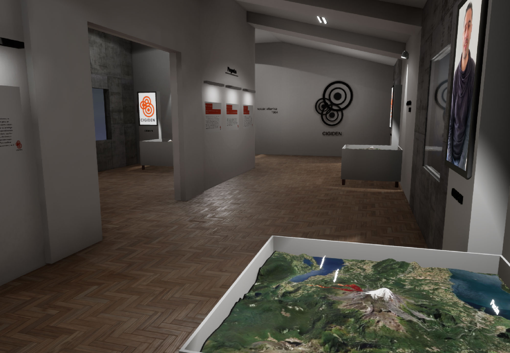

Muestra Virtual Interactiva que expone a través de simulaciones computacionales proyectadas sobre maquetas 3D y a escala de diferentes lugares de Chile, cómo Antofagasta, Valparaíso y Villarrica. Podrás recorrer y visitar cada una de las simulaciones de Terremotos, Tsunamis, Aluviones y Erupciones Volcánicas, que han afectado a las diferentes regiones del país.
Luego de obtener link de acceso a través del formulario podrás acceder a descargar la muestra virtual.
Para Windows, se iniciará automáticamente la descarga de un archivo comprimido Muestra_Virtual.zip. Para tener acceso a la muestra se deberá descomprimir el archivo ZIP e iniciar la muestra virtual a través del ejecutable Muestra_Virtual.exe que se encuentra al interior de la carpeta descargada.
Fecha:
Jueves 1 de abril conmemoración terremoto y tsunamis de 2014.Entidad asociada:
Municipalidad de Iquique y la UCN.Actividad lanzamiento regional:
Conversatorio científico ciudadano: Diálogo entre tomadores de decisión, científicos y dirigentes sociales en torno a la gestión del riesgo y escenarios sísmicos y de tsunamis en Iquique.Participantes:
Alcalde o representante de Municipalidad de Iquique, investigadores CIGIDEN (Juan González y Gabriel González), profesores de colegios o encargado DAEM municipal, y otros. Generar RecordatorioFecha:
12 y 18 de abril Paseo de la Ciencia de Puerto de Ideas virtual.Entidad asociada:
Puerto de Ideas y UCN.Actividad lanzamiento regional:
Taller participativo lanzamiento de la muestra ¡Chile, territorio en movimiento! en Paseo de la Ciencia del Festival Puerto de Ideas.Participantes:
Alcalde o representante de la Municipalidad de Antofagasta, investigadores CIGIDEN (Francisca Roldan y Susana Layana), representante Puerto de Ideas, profesores de colegios o encargado DAEM municipal. Generar RecordatorioFecha:
Lunes 3 de mayo, conmemoración del aluvión de Quebrada de Macul.Entidad asociada:
Municipalidad de La Florida y UC.Actividad lanzamiento regional:
Conversatorio científico ciudadano: Diálogo entre tomadores de decisión, científicos y dirigentes sociales en torno a la gestión del riesgo y escenarios de aluviones.Participantes:
Alcalde o representante de la Municipalidad de La Florida, investigadores CIGIDEN (Jorge Gironás, Francisca Roldan y Leila Juzam), representantes de la comunidad organizada en tomas y otros. Generar RecordatorioFecha:
22 de mayo, conmemoración Terremoto de Valdivia.Entidad asociada:
Cyclos y Municipalidad de Valdivia.Actividad lanzamiento regional:
Conversatorio científico ciudadano: Diálogo entre tomadores de decisión, científicos y dirigentes sociales en torno a la gestión del riesgo y escenarios de aluviones.Participantes:
Alcalde de Valdivia, investigadores CIGIDEN (Felipe Aguilera y Patricio Winckler y/o Marcos Moreno), representante Cyclos. Generar Recordatorio